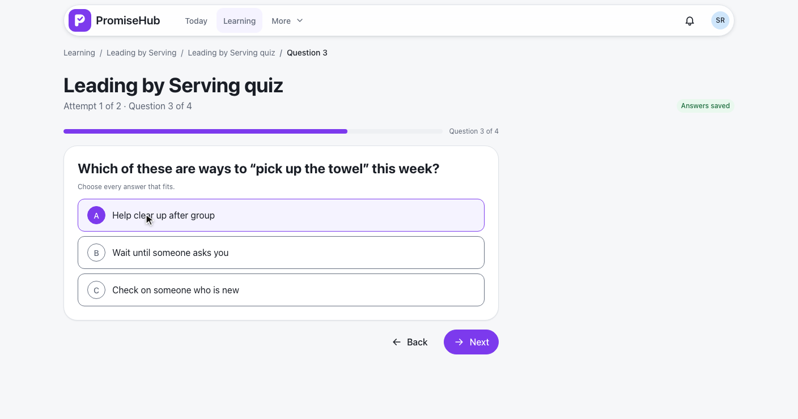
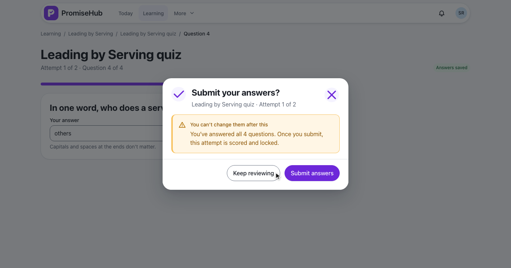
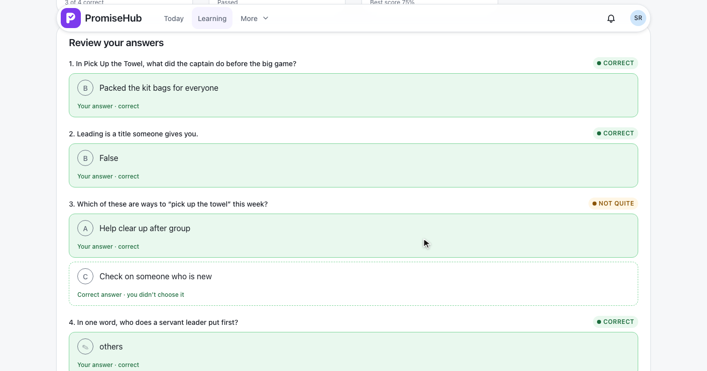
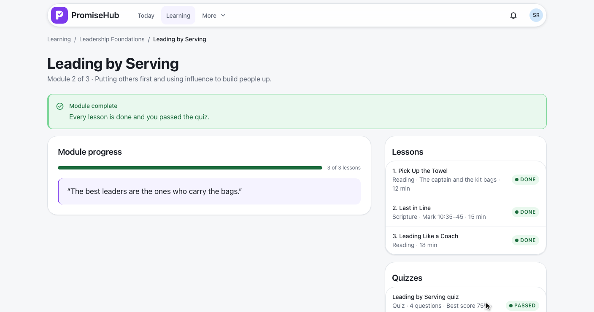
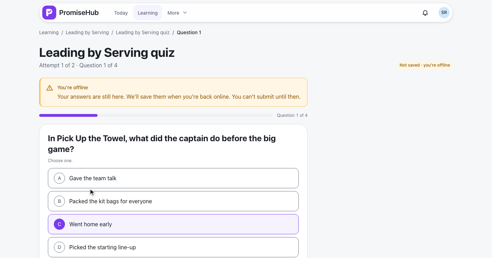

PromiseHub · Video 61
Take quizzes
The rules, one question at a time with autosave, a submit that locks the attempt, and the result
The rules, one question at a time with autosave, a submit that locks the attempt, and the result
From the module, the rules, four questions saved as she goes, submit and the result.

POST /learning/quizzes/{id}/attempts starts or resumes, audited as Created on QuizAttemptPUT /learning/attempts/{id}/answers with every answer and her positionlocked
POST /learning/attempts/{id}/submitQuizScoring on the serversubmitted to any change


Not this time, the last attempt, and a reload that resumes it.
The rules, a question and the result in one column.
Locked, offline, no attempts left, score only, waiting, not found, Try again, Learning off.
| Feedback rule | Review |
|---|---|
| After each attempt | Every time |
| Score only | Never |
| After the last attempt | Once none is left |
| Mentor approves | No score until approved |

LearningQuizIntroTests, LearningQuizAttemptTests: rules, locks, start, resume, autosave, refusalsLearningQuizSubmitTests, LearningQuizResultTests: scoring, locking, limits, feedback, approval, requirede2e/tests/learning/quizzes.spec.ts on phone and laptop, offline included, with axe
Next: youth submit assignments